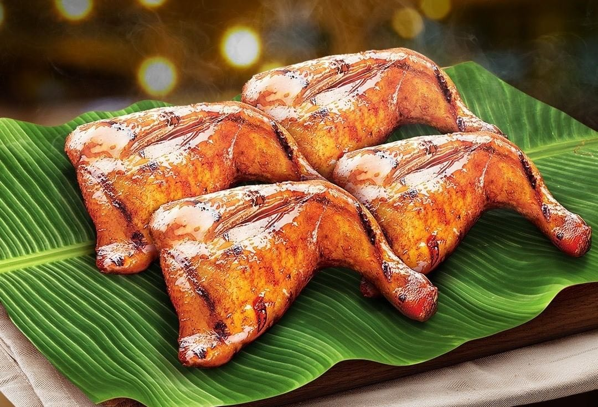

Common recipes in the Philippines
Household recipes
A person who does not remember where he came from will never reach his destination.
In the previous page, we discussed the main cooking methods Filipinos use
to prepare dishes. We will now be diving into some common recipes. We will
only be discussing the main method used in preparing the dish and not the
process of creating it. If you want to prepare the dish, links to the recipes
can be found on the references page. And like we
always say, Mabuhay!
Tinola
Tinola is traditionally cooked with wedges of unripe papaya and malunggay leaves. These components make it a good source of nutrients. The secret in making a good tinola is to simmer the chicken for longer periods of time. This extracts the flavor from the chicken. It also makes the chicken tender in the process.
Variants of the dish can substitute chicken with fish, seafood, or pork. Chayote or calabash (upo) can also be substituted for green papaya. Instead of pepper leaves, other leafy vegetables can also be used like pechay, spinach, moringa leaves, and mustard greens, among others. Additional ingredients like potatoes and tomatoes can also be added.
Inasal and barbeque
Chicken Inasal is a grilled chicken dish and one of the well known Ilonggo dishes. This is done by marinating chicken pieces in a unique blend of spices and grilling them until done. Sounds like a simple grilled chicken recipe, isn’t it? Well, it might sound like one; however, the special marinade and basting sauce makes this Ilonggo version of the grilled chicken extra special.
Pork barbecue in bamboo skewers is what Filipino Style Pork BBQ is all about. It is composed of thinly sliced pork pieces that are marinated in a special mixture of seasonings and spices. In the Philippines, it is normally grilled over wood charcoal and dipped in a tall jar of spicy vinegar before eating.
Lechon Baboy

Lechon Baboy (Pig) is another national dish of the Philippines. I prefer to call it Litson in our dialect. Litson or Lechon Baboy is also known as Roasted Sucklig Pig, is a famous dish and most of the time symbolizes the bond that brings families and friends together for gatherings on occasions especially during Fiesta (Feast). There is a difference when you only use the word Lechon to refer as there is also what we call Lechon Manok for Roasted Chicken or Lechon Baka for Roasted Calf. Basically when you use the word Lechon, it typically means the manner of cooking which is Roasting.
I suppose almost everywhere in the Philippines, a celebration i.e. Weddings, Birthdays, Baptism, and Graduation, would not be complete without a Whole Lechon served in the middle of the dining table. It is basically the centerpiece or the main attraction in terms of food for any occasion. That is why it is considered to be one of the Top 10 Delicious Foods you must try in the Philippines. Cooking Lechon requires a lot of patience since its cooking time is somewhat long, roasting the whole pig usually takes up to 4-5 hours over a charcoal. The cooking time varies with the size and age of the pig. Ideally, to get the perfect lechon it is best to cook young pigs between ages 4-6 weeks old when they are less fatty and not that old. The ideal weight for pigs for Lechon Baboy is around 18 to 20 kilos. At this age and weight, its meat is at its finest and the skin is neither too thick nor too thin.
Pancit Guisado

Pancit Guisado is a Filipino noodle dish. It is also known as Pancit Bihon Gisado. This dish is composed of rice noodles, shredded chicken, shrimp, and vegetables. The noodles are locally called bihon. The word Guisado refers to the method used in cooking the dish. It simply means sautéed in english.
Pancit is a symbol for long life. It is served during special occasions. A typical birthday menu should have pancit. This dish also attributed to the Christmas season. It is a favorite during potluck Christmas parties. It is also one of the dishes that I recommend for Christmas dinner or Noche Buena.
Lechon Kawali
Crispy deep-fried pork is the simplest way to describe lechon kawali. Pork belly or liempo is the cut of pork usually used to cook it. This dish is best served for lunch or dinner with white rice on the side. It is also nice to have with dipping sauce. This dish should not be mistaken with Lechon, which is considered as the national dish of the Philippines. Both dishes are prepared in a different manner. These also have different visual appearance.
Lechon kawali got its name from the type of cooking pan that is traditionally used to cook it, the Kawali. It is the typical pan that can be found in almost all Filipino household. This is the “goto” pan in everyday cooking. There are two processes involved in cooking lechon kawali. The first process involves boiling the pork belly, while the next is deep-frying until the skin becomes crispy.